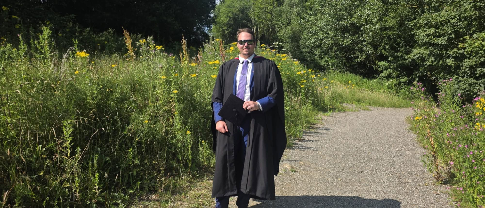

Open to opportunities
Dinas
Dinas
Stakeliunas
Computer Science graduate from Lancaster University
🎓 BSc Computer Science
📍 Lancaster, England, UK
Mushroom Predictor
UKCEH LCM2024 & WeatherInteractive fruiting predictor correlating UKCEH satellite land cover classifications with live weather microclimate statistics.